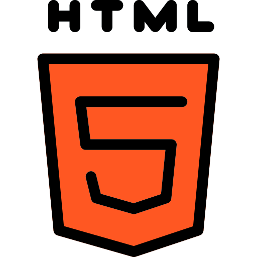
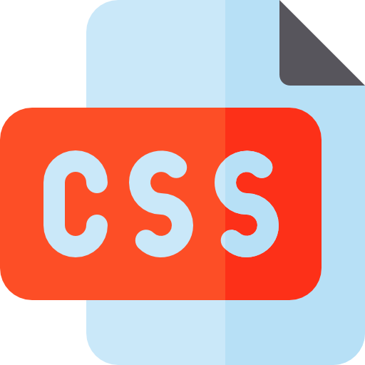

HTML
HTML — це стандартизована мова розмітки документів для перегляду вебсторінок у браузері. Браузери отримують HTML-документ від сервера за протоколами HTTP/HTTPS або відкривають з локального диска, далі інтерпретують код в інтерфейс, який відображатиметься на екрані монітора.
Елементи HTML є будівельними блоками сторінок HTML. За допомогою конструкцій HTML, зображення та інші об'єкти, такі як інтерактивні форми, можуть бути вбудовані й візуалізовані у сторінку. HTML надає засоби для створення структурованих документів, позначаючи структурну семантику тексту, наприклад заголовки, абзаци, списки, посилання, цитати та інші елементи.
Детальніше

CSS
CSS — це спеціальна мова стилю сторінок, що використовується для опису їхнього зовнішнього вигляду. Самі ж сторінки написані мовами розмітки даних.
CSS є основною технологією всесвітньої павутини, поряд із HTML та JavaScript.
Найчастіше CSS використовують для візуальної презентації сторінок, написаних HTML та XHTML, але формат CSS може застосовуватися до інших видів XML-документів.
Специфікації CSS були створені та розвиваються Консорціумом Всесвітньої мережі. CSS використовується авторами та відвідувачами вебсторінок, щоб визначити кольори, шрифти, верстку та інші аспекти вигляду сторінки. Одна з головних переваг — можливість розділити зміст сторінки (або контент, наповнення, зазвичай HTML, XML або подібна мова розмітки) від вигляду документа (що описується в CSS).
Детальніше
JS
JavaScript — це динамічна, об'єктно-орієнтована прототипна мова програмування. Вона реалізує стандарт ECMAScript і найчастіше використовується для створення сценаріїв вебсторінок.
JS дає змогу на боці клієнта (пристрої кінцевого користувача) взаємодіяти з користувачем, керувати браузером, асинхронно обмінюватися даними з сервером, а також змінювати структуру та зовнішній вигляд вебсторінки.
JavaScript класифікується як прототипна (підмножина об'єктно-орієнтованої), скриптова мова програмування з динамічною типізацією. Окрім прототипної, JavaScript також частково підтримує інші парадигми програмування
(імперативну та частково функційну) та деякі відповідні архітектурні властивості, зокрема: динамічна та слабка типізація, автоматичне керування пам'яттю, прототипне наслідування, функції як об'єкти першого класу.
Детальніше